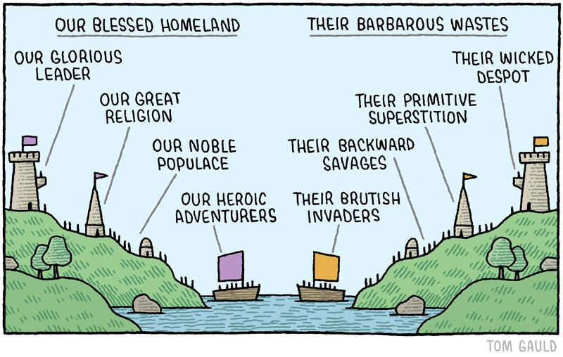

Linguistic Intergroup Bias
What is Intergroup Bias?
Intergroup bias refers to the systematic human tendency to exhibit favoritism towards one’s in-group over the out-group. This favoritism, or bias, may manifest in behaviour (e.g. discrimination), attitude (e.g. prejudice), and/or cognition (e.g. stereotyping), and may take the form of in-group favoritism and/or out-group derogation.
A key motivator of intergroup bias is Social Identity Theory (Tajfel 1979), which posits that humans derive a portion of their self-identity from their membership in social groups. Humans automatically categorize social groups into “us” (the in-group) and “them” (the out-group) based on attributes such as race, gender, familial relation, or sports team allegiance, and then adopt the behaviours, norms, and values of the group. After identifying with a group, members compare their group to others, and exhibit positive distinctiveness - the process in which members of the in-group are inclined to make their group seem positively distinct from the out-group. As in, not only are the two groups different, the in-group also attempts to make this difference favorable.
Social categorization is strong. In fact, Tajfel (1970) demonstrated that mere categorization, even if trivial or nonsensical, is sufficient for in-group favoritism and out-group discrimination. In the study, it was found that British schoolboys categorized based on their preference between abstract artists Paul Klee and Wassily Kandinsky exhibited favoritism towards fellow schoolboys with the same preference, despite the insignificance of the social categorization. The participants were asked to assign points to members of both groups, and it was seen that they tended to do so in such a way that the difference between the two groups was maximized, even if this meant that the in-group overall had less points. In short, the very act of categorization is enough to trigger intergroup discrimination, and additionally, individuals desire to maximize the difference between the in-group and out-group.

Linguistic Intergroup Bias
Naturally, intergroup bias manifests in language. The linguistic intergroup bias (LIB) model, proposed by Anne Maass, describes how systematic biases reflected in language contribute to the perpetuation and persistence of stereotypes (Maass et al. 1989). Specifically, the LIB model highlights differences in levels of abstraction between in-group and out-group linguistics - positive behaviours displayed by in-group members are described in more abstract terms, whereas the same behaviours shown by an out-group member are described in more concrete terms. Inversely, negative behaviours are described more concretely when performed by an in-group member, but in more abstract terms when performed by an out-group member.
This differential can be explained by beliefs about the agent’s intrinsic nature, based on their group membership. Describing an observed behaviour abstractly implies that the action is perceived as stable and characteristic of the actor, since such descriptions imply greater generality and probability of future repetition. Concrete descriptions of behaviours, however, suggest that the action is an isolated or uncharacteristic event not necessarily linked to the actor’s enduring qualities. These gaps in levels of abstraction when describing the same action can unsurprisingly result in varying impressions on a hypothetical listener.
It is easy to see that such differential language can bolster existing stereotypes - it can be viewed as a self-perpetuating cycle where stereotype-congruent behaviours by the out-group are described in abstract terms that reinforce the prior (negative) expectations and perceptions of the out-group. Unexpected positive actions by the out-group are described in concrete terms, suggesting that they are uncharacteristic and are isolated events. These tendencies keep the unfavorable perception of the out-group intact. One can imagine especially how such differential language can have longstanding and consequential impacts in particular given the extensive use of social media in the modern age, which allows for the rapid dissemination of language in large volumes.
According to Maass et al. (1989), two main explanations for the underlying mechanism for the LIB are 1) in-group protection, and 2) differential expectancy.
The former is motivated and based loosely on Tajfel’s Social Identity Theory (SIT) - it hypothesises that the LIB serves to protect or enhance one’s social identity. A key element of the SIT is positive distinctiveness, i.e., the desire for members of a group to portray the in-group as not only different, but different in a positive way, from the out-group. The LIB can be considered a potential strategy of maintaining a positive light of one’s in-group.
The second explanation suggests that the LIB may be a result of differential expectancy - variations in a speaker’s expectations of the behaviours of the in-group and out-group. Abstract language may be preferred when behaviours confirm prior expectations, while concrete language is preferred when unexpected or surprising behaviours are observed. Hence, because individuals tend to expect more desirable behaviours from their in-group, they naturally utilize abstract language when referring to the positive behaviours, and concrete language when referring to the unexpected negative behaviours.
Quantifying Intergroup Bias
Measures of psychological valence, i.e., measures of the positivity of words, have been a longtime tool in the assessment of intergroup bias. Schmidtke and Kuperman (2024) used corpus-based lexical estimates of valence to investigate bias in intergroup scenarios. Participants were assigned to either the “in-group” or “out-group” conditions and were given a set of “seed” words. In the “in-group” condition, participants were told that the seed words described their in-group, and were asked to provide three more words to describe their group. Those in the “out-group” condition were told that the seed words described an out-group, and were asked to provide three more words to describe that out-group. The intention of the experiment was to assess differences in valence in the words produced by participants of either group. To control the “ground truth,” the valence of the seed words were manipulated such that they ranged from highly positive to highly negative.
It was found, expectedly, that the valence of words directed towards the in-group was higher than that of words directed at the out-group. With regards to the seed “ground truth” valence, it was found that evaluations about the out-group were much closer to the seed valence, while evaluations about the in-group were consistently inflated. Furthermore, the magnitude of inflation from the “ground truth” tended to be larger when the valence of the seed words were more negative, suggesting that there is an implicit tendency to dissociate one’s in-group from negative characterizations.
As an extension to their first experiment, Schmidtke and Kuperman (2024) also examined the propagation of intergroup bias throughout successive generations. Using the linear difusion chain paradigm (which feeds responses of one generation to a next generation, who is given the same task, in this case of providing additional words based on seed words and group membership), it was found that there was a gradual increase in positivity in successive in-group generations, and a gradual decline in positivity in successive out-group generations. In short, intergroup bias is amplified across generations. As in the former experiment, the valence of the seed words did impact the magnitude of amplicifcation. For evaluations directed at the in-group, the positive inflation of generation was significant when the seed words were of low and mid valence, but not of high valence. For evaluations of directed at the out-group, the negative effect of generation was significant when the seed words were of mid and high valence, but not of low valence. Examination of the actual slopes of each model indicated that the desire to enhance initially negative descriptions of the in-group are stronger than the desire to derogate negative traits of the out-group.